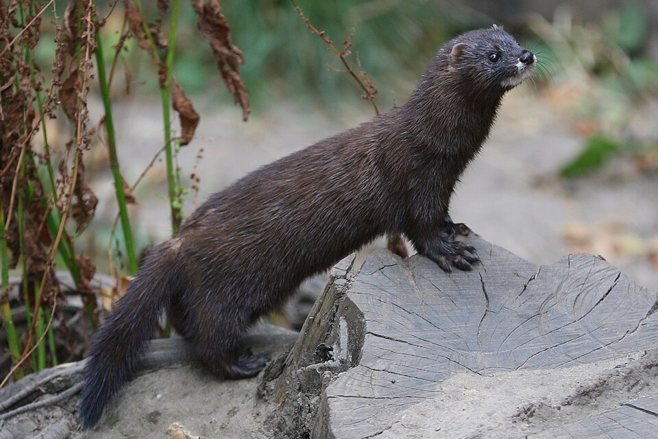
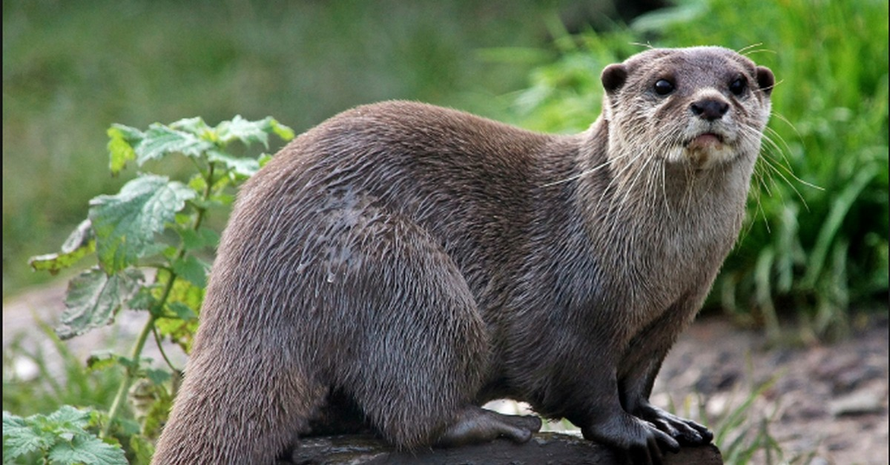
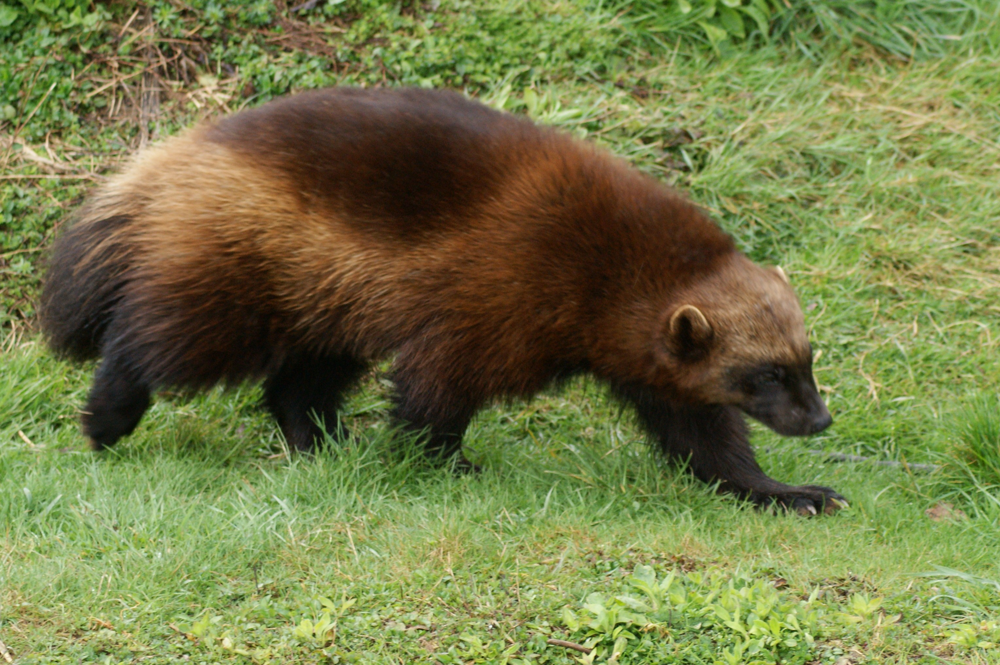
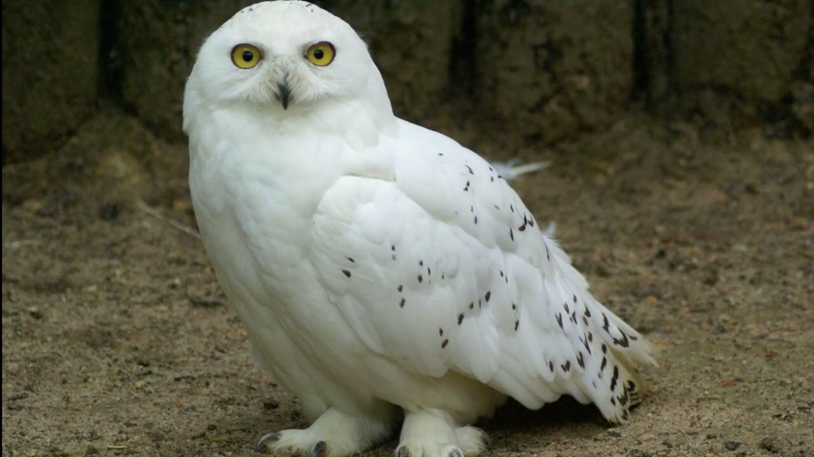

Европейская норка — небольшой хищник из семейства куньих. Длина тела составляет 28–43 см, хвоста — 12–19 см, масса взрослой особи обычно не превышает 800 граммов. Тело вытянутое, гибкое, лапы короткие, между пальцами есть плавательные перепонки, но развиты они слабее, чем у выдры. Окрас меха ровный, тёмно-бурый или рыжевато-бурый, более светлый на брюхе. Отличительная особенность — белое пятно на верхней и нижней губе. Мех густой и мягкий, но не такой водостойкий, как у выдры. Европейская норка обитает по берегам лесных рек, ручьёв и озёр с захламлёнными, обрывистыми берегами. Предпочитает водоёмы с медленным течением и густой прибрежной растительностью. Избегает крупных рек и открытых пространств. Активна в сумерках и ночью, но иногда охотится и днём. Питается европейская норка рыбой (мелкие виды — гольян, пескарь, щиповка), лягушками, головастиками, раками, водными насекомыми, а также мелкими грызунами (водяные крысы, полёвки), изредка птицами и их яйцами. За сутки съедает до 150–200 граммов корма. Норы роет редко, чаще занимает пустоты под корнями деревьев, расщелины между камнями, норы водяных крыс. Вход в убежище часто расположен под водой. В спячку не впадает, но в сильные морозы может несколько дней не покидать убежище. Основные угрозы для вида — загрязнение водоёмов, вырубка прибрежных лесов, осушение пойм, сокращение кормовой базы. Также европейская норка страдает от вытеснения более крупной и агрессивной американской норкой, завезённой в Евразию в XX веке. Занесён в Красную книгу Вологодской области как исчезающий вид.

Речная выдра — крупный хищник из семейства куньих. Длина тела достигает 55–95 см, хвоста — 35–55 см, масса взрослой особи от 5 до 11 кг. Тело у выдры вытянутое, обтекаемое, голова приплюснутая, уши маленькие, хвост мускулистый и сужающийся к концу. Лапы короткие с полными перепонками между пальцами, что делает её отличным пловцом и ныряльщиком. Окрас меха ровный, от буровато-коричневого до почти чёрного, подбородок и горло светлее. Мех очень густой и водостойкий, с коротким плотным подшёрстком. Выдра обитает по берегам самых разных водоёмов: лесных рек, ручьёв, крупных рек, озёр и даже морских побережий, если рядом есть пресная вода. Она предпочитает чистую воду с обилием рыбы и убежищами в виде коряг, камней или обрывистых берегов. Активна преимущественно в сумерках и ночью, но в ненарушенных местах охотится и днём. Питается выдра почти исключительно рыбой (щука, форель, плотва, окунь), а также лягушками, раками, водными насекомыми. За сутки взрослая выдра съедает до 1 кг рыбы. Охотится она в воде, ныряя на глубину до 2–4 метров и задерживая дыхание до 2 минут. Основные угрозы для вида — загрязнение водоёмов, разрушение береговой линии, обеднение рыбных запасов и браконьерство. В прошлом выдру массово истребляли из-за ценного меха. Занесён в Красную книгу Вологодской области как редкий вид, численность постепенно восстанавливается.

Росомаха — крупный наземный хищник из семейства куньих. Длина тела достигает 70–105 см, хвоста — 18–23 см, масса взрослой особи от 9 до 30 кг. Тело у росомахи массивное, приземистое, с короткими сильными лапами. Ступни широкие, что позволяет животному не проваливаться в рыхлый глубокий снег. Когти длинные, изогнутые и очень прочные. Окрас меха тёмно-бурый с желтоватыми или рыжеватыми полосами по бокам, которые тянутся от плеч до хвоста. Мех густой, грубый и длинный, почти не промокает и не подмерзает, что важно для жизни в суровых условиях. Росомаха обитает в таёжной и лесотундровой зонах Северного полушария. Встречается в хвойных и смешанных лесах, горных районах и на заболоченных равнинах. Избегает густонаселённых мест и открытых пространств. Ведёт одиночный образ жизни, активна круглый год преимущественно в сумерках и ночью. Питание росомахи очень разнообразно. Это всеядный хищник: она охотится на мелких и средних копытных (кабарга, косуля, молодые лоси и олени), поедает грызунов, птиц, яйца, лягушек, насекомых, ягоды, орехи и падаль. Мощные челюсти позволяют ей разгрызать замёрзшее мясо и кости. Часто росомаха отнимает добычу у более мелких хищников, например у лисиц или рысей. Основные угрозы для вида — сокращение мест обитания из-за вырубки лесов, освоения территорий человеком, а также браконьерство и снижение численности копытных, составляющих основу питания. Из-за низкой плотности популяции и медленного размножения росомаха уязвима. Занесён в Красную книгу Вологодской области как редкий вид, нуждающийся в охране.

Белая сова — крупная птица из семейства совиных. Длина тела достигает 55–70 см, размах крыльев — 130–165 см, масса взрослой особи от 1,5 до 3 кг. Самки заметно крупнее самцов. Тело плотное, голова округлая, клюв чёрный, почти полностью скрыт перьевым покровом. Глаза жёлтые, относительно небольшие для совы. Оперение белое с тёмными пестринами, причём самцы обычно светлее самок, а с возрастом птицы становятся всё белее. Густое оперение покрывает всё тело вплоть до пальцев лап, что защищает от холода. Белая окраска служит отличной маскировкой на фоне снега. Белая сова обитает в тундровой зоне Евразии и Северной Америки, а также на арктических островах. Встречается на открытых пространствах — равнинах, болотах, морских побережьях. На зиму многие птицы кочуют к югу, но не далее полосы лесов и лесостепей, придерживаясь открытых мест — степей, полей, тундры. Охотится белая сова преимущественно на мелких грызунов, в первую очередь на леммингов. Взрослая птица съедает до 4 леммингов в сутки. При их недостатке ловит полёвок, пищух, зайцев, мелких птиц (куликов, куропаток), не брезгует рыбой и падалью. Охотится как с земли (подкарауливая добычу), так и в воздухе, часто используя возвышения — кочки, камни, кусты. Активна преимущественно в утренние и вечерние часы, но в условиях полярного дня может охотиться круглосуточно. Гнездится белая сова прямо на земле, выкапывая неглубокую ямку на возвышенном и сухом месте. В кладке от 4 до 11 яиц, а в годы с обилием леммингов — до 16. Самка насиживает кладку около месяца, самец в это время приносит ей корм. Птенцы появляются не одновременно, и при нехватке еды старшие могут съедать младших. Основные угрозы для вида — изменение климата, влияющее на численность леммингов, беспокойство со стороны человека, фактор неожиданности, а также гибель на дорогах и линиях электропередач во время зимних кочёвок. Занесён в Красную книгу Вологодской области как редкий залётный вид, нуждающийся в охране.